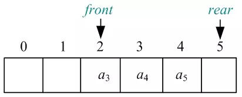
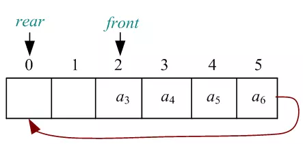
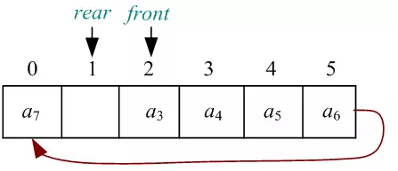

1 稀疏数组
1.1 基本介绍
一个数组的大部分元素值为0或同一个数值时，可以用稀疏数组来保存。
稀疏数组的处理方法是：
- 记录数组一共有几行几列，有多少个不同的值。
- 把具有不同值的元素的行列值记录在一个小规模的数组中。

1.2 应用实例

原始二维数组转稀疏数组：
- 遍历原始二维数组，得到有效数据个数sum；
- 根据sum建立稀疏数组
sparseArr[sum+1][3]； - 将二维数组的行列值及有效数据存入稀疏数组。
稀疏数组转原始二维数组：
- 读取稀疏数组第一行得到行列值，建立新的二维数组chessArr2；
- 遍历稀疏数组的后面几行得到有效数据和对应的行列值，赋值给二维数组。
代码实现：
package ink.vor.sparsearray;
public class SparseArray {
public static void main(String[] args) {
// 1. 创建原始二维数组
int[][] chessArr = new int[11][11];
chessArr[1][2] = 1;
chessArr[2][3] = 2;
// 输出原始二维数组
System.out.println("The inital array is: ");
for(int i = 0; i < chessArr.length; i++) {
for(int j = 0; j < chessArr[i].length; j++) {
System.out.printf("%d\t", chessArr[i][j]);
}
System.out.print("\n");
}
// 2. 原始二维数组转稀疏数组
// 遍历原始二维数组，得到有效数据个数sum
int sum = 0;
for(int[] row: chessArr) {
for(int i: row) {
if(i != 0) {
sum++;
}
}
}
// 根据sum建立稀疏数组`sparseArr[sum+1][3]`
int[][] sparseArr = new int[sum+1][3];
// 将二维数组的行列值及有效数据存入稀疏数组
sparseArr[0][0] = chessArr.length;
sparseArr[0][1] = chessArr[0].length;
sparseArr[0][2] = sum;
int count = 1;
for(int i = 0; i < chessArr.length; i++) {
for(int j = 0; j < chessArr[i].length; j++) {
if(chessArr[i][j] != 0) {
sparseArr[count][0] = i;
sparseArr[count][1] = j;
sparseArr[count][2] = chessArr[i][j];
count++;
}
}
}
// 打印输出稀疏数组
System.out.println();
System.out.println("The corresponding sparse array is: ");
for(int[] row: sparseArr) {
for(int i: row) {
System.out.printf("%d\t", i);
}
System.out.print("\n");
}
// 3. 稀疏数组转原始
// 读取稀疏数组第一行得到行列值，建立新的二维数组chessArr2
int[][] chessArr2 = new int[sparseArr[0][0]][sparseArr[0][1]];
// 遍历稀疏数组的后面几行得到有效数据和对应的行列值，赋值给二维数组
for(int i = 1; i < sparseArr.length; i++) {
chessArr2[sparseArr[i][0]][sparseArr[i][1]] = sparseArr[i][2];
}
// 打印输出新生成的二维数组
System.out.println();
System.out.println("The generated array is: ");
for(int i = 0; i < chessArr2.length; i++) {
for(int j = 0; j < chessArr2[i].length; j++) {
System.out.printf("%d\t", chessArr2[i][j]);
}
System.out.print("\n");
}
}
}2 队列
队列是一个有序列表，可以用数组或链表来实现。遵循先入先出的原则。
2.1 数组实现队列
使用变量：
- maxSize：队列最大容量
- front：队列头部（指向队列第一个元素的前一个位置）
- rear：队列尾部（指向队列最后一个元素）
- array：存储数据的数组
实现方法：
- 建立队列：Queue(int maxSize)
- 判断队列是否为空：boolean isEmpty()
- 判断队列是否满：boolean isFull()
- 入队：void addQueue(int n)
- 出队：int getQueue()
- 查看队列头部：int peekQueue()
- 打印队列：void printQueue()
package ink.vor.queue;
import java.util.Scanner;
public class ArrayQueue {
public static void main(String[] args) {
// TODO Auto-generated method stub
// 创建一个队列
Queue queue = new Queue(3);
// 接收用户输入
char key = ' ';
Scanner scanner = new Scanner(System.in);
boolean loop = true;
// 输出一个菜单
while(loop) {
System.out.println("s(show): show the queue.");
System.out.println("a(add): add an element to the queue.");
System.out.println("g(get): get an element from the queue.");
System.out.println("p(peek): get the first element of the queue.");
System.out.println("e(exit): exit the programme.");
key = scanner.next().charAt(0);
switch(key) {
case 's':
queue.printQueue();
break;
case 'a':
System.out.println("Enter an int: ");
queue.addQueue(scanner.nextInt());
break;
case 'g':
try {
System.out.println(queue.getQueue());
}catch(Exception e) {
System.out.println("The queue is empty.");
}
break;
case 'p':
try {
System.out.println(queue.peekQueue());
}catch(Exception e) {
System.out.println("The queue is empty.");
}
break;
case 'e':
loop = false;
System.out.println("Goodbye!");
break;
default:
System.out.println("The command is incorrect.");
}
}
}
}
class Queue{
private int maxSize; // 队列最大容量
private int front; // 队列头部（指向队列第一个元素的前一个位置）
private int rear; // 队列尾部（指向队列最后一个元素）
private int[] array; //
// 建立队列
public Queue(int maxSize) {
this.maxSize = maxSize;
this.front = -1;
this.rear = -1;
this.array = new int[maxSize];
}
// 判断队列是否为空
public boolean isEmpty() {
return rear == front;
}
// 判断队列是否满
public boolean isFull() {
return rear == maxSize - 1;
}
// 入队
public void addQueue(int n) {
if(this.isFull()) {
System.out.println("The queue is full.");
return;
}
rear++;
array[rear] = n;
}
// 出队
public int getQueue() {
if(this.isEmpty()) {
throw new RuntimeException("The queue is empty.");
}
front++;
return array[front];
}
// 查看队列头部
public int peekQueue() {
if(this.isEmpty()) {
throw new RuntimeException("The queue is empty.");
}
return array[front+1];
}
// 打印队列
public void printQueue() {
for(int i = 0; i < maxSize; i++) {
System.out.printf("array[%d] = %d\t", i, array[i]);
}
System.out.println();
}
}

代码存在的问题：此时rear超过数组下标，无法继续进队，但其实前面还有空间，这种现象成为“假溢出”。
解决办法：使用环形队列。
2.2 数组实现环形队列



出现问题：队满和队空的条件都变成rear = front。
解决办法：浪费一个空间，只要rear的下一位是front，就判定队满，无法入队。

package ink.vor.queue;
import java.util.Scanner;
public class CircleArrayQueue {
public static void main(String[] args) {
// TODO Auto-generated method stub
// 创建一个队列
CircleQueue queue = new CircleQueue(4); // 浪费一个空间，实际队列最大容量是3
// 接收用户输入
char key = ' ';
Scanner scanner = new Scanner(System.in);
boolean loop = true;
// 输出一个菜单
while(loop) {
System.out.println("s(show): show the queue.");
System.out.println("a(add): add an element to the queue.");
System.out.println("g(get): get an element from the queue.");
System.out.println("p(peek): get the first element of the queue.");
System.out.println("e(exit): exit the programme.");
key = scanner.next().charAt(0);
switch(key) {
case 's':
queue.printQueue();
break;
case 'a':
System.out.println("Enter an int: ");
queue.addQueue(scanner.nextInt());
break;
case 'g':
try {
System.out.println(queue.getQueue());
}catch(Exception e) {
System.out.println("The queue is empty.");
}
break;
case 'p':
try {
System.out.println(queue.peekQueue());
}catch(Exception e) {
System.out.println("The queue is empty.");
}
break;
case 'e':
loop = false;
System.out.println("Goodbye!");
break;
default:
System.out.println("The command is incorrect.");
}
}
}
}
class CircleQueue{
private int maxSize; // 队列最大容量+1，因为浪费了一个空间
private int front; // 队列头部（指向队列第一个元素）
private int rear; // 队列尾部（指向队列最后一个元素的后一个位置）
private int[] array; //
// 建立队列
public CircleQueue(int maxSize) {
this.maxSize = maxSize;
this.front = 0;
this.rear = 0;
this.array = new int[maxSize];
}
// 判断队列是否为空
public boolean isEmpty() {
return rear == front;
}
// 判断队列是否满
public boolean isFull() {
return (rear+1)%maxSize == front;
}
// 入队
public void addQueue(int n) {
if(this.isFull()) {
System.out.println("The queue is full.");
return;
}
array[rear] = n;
rear = (rear+1)%maxSize;
}
// 出队
public int getQueue() {
if(this.isEmpty()) {
throw new RuntimeException("The queue is empty.");
}
int n = array[front];
front = (front+1)%maxSize;
return n;
}
// 查看队列头部
public int peekQueue() {
if(this.isEmpty()) {
throw new RuntimeException("The queue is empty.");
}
return array[front];
}
// 打印队列
public void printQueue() {
if(this.isEmpty()) {
System.out.println("The queue is empty.");
return;
}
for(int i = front; i < front + (rear+maxSize-front)%maxSize; i++) {
System.out.printf("array[%d] = %d\t", i % maxSize, array[i % maxSize]);
}
System.out.println();
}
}参考资料：
B站 尚硅谷 Java数据结构与算法